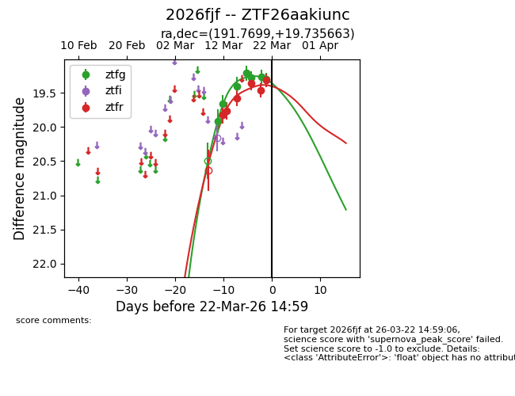
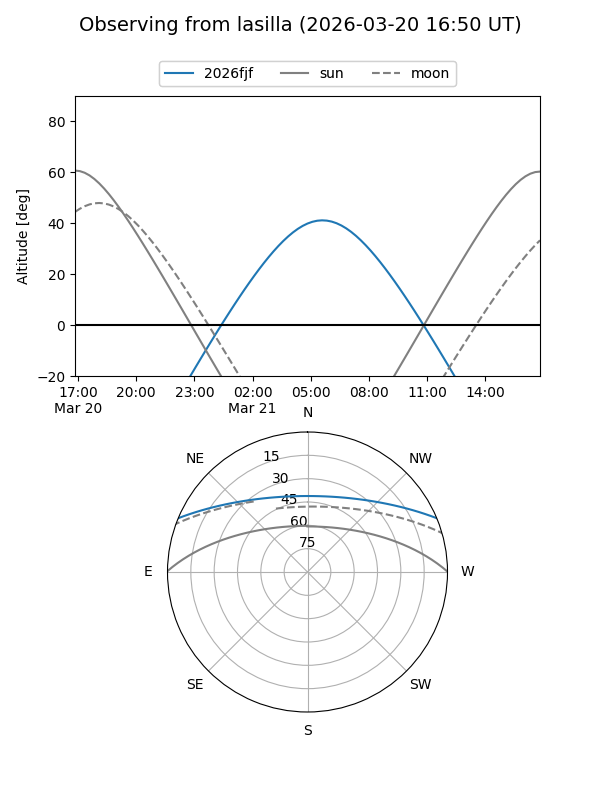
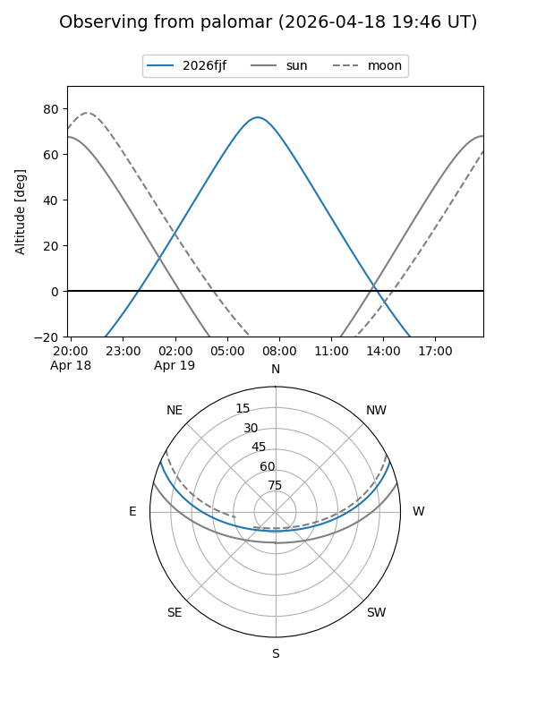
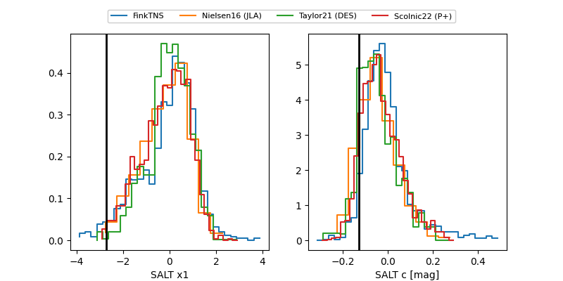

2026fjf
Target 2026fjf at 2026-03-22 15:01
Aliases and brokers:
FINK: link
Lasair: link
ALeRCE: link
TNS: link
YSE: link
alt names
ZTF26aakiunc (ztf,fink_ztf)
2026fjf (tns,yse)
Coordinates:
equatorial (ra, dec) = 191.7699,+19.73566
equatorial (HMS+DMS) = 12:47:04.77,+19:44:08.39
galactic (l, b) = (295.0076,+82.54026)
Flags:
Photometry:
last ztfg=19.30, ztfr=19.31
7 ztfg, 6 ztfr detections
Lightcurve

Visibility


Additional plots
